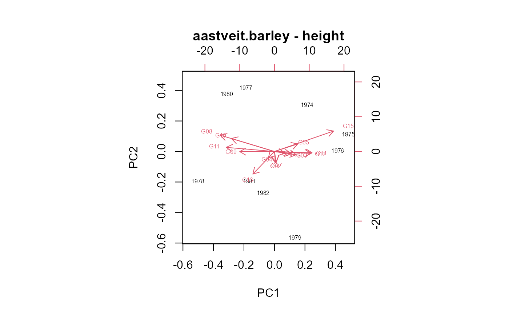
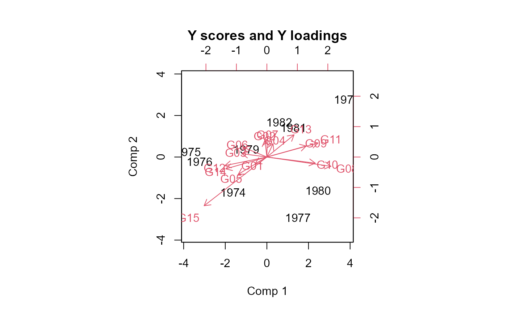
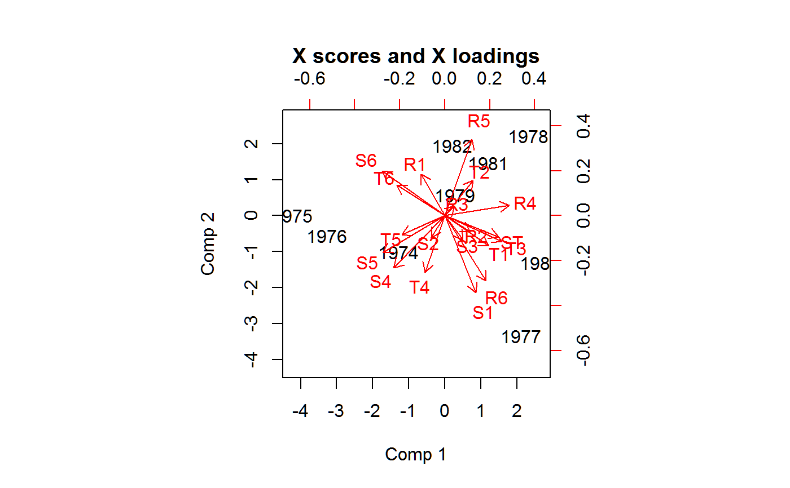

aastveit.barley.RdAverage height for 15 genotypes of barley in each of 9 years. Also 19 covariates in each of the 9 years.
data("aastveit.barley.covs") data("aastveit.barley.height")
The 'aastveit.barley.covs' dataframe has 9 observations on the following 20 variables.
yearyear
R1avg rainfall (mm/day) in period 1
R2avg rainfall (mm/day) in period 2
R3avg rainfall (mm/day) in period 3
R4avg rainfall (mm/day) in period 4
R5avg rainfall (mm/day) in period 5
R6avg rainfall (mm/day) in period 6
S1daily solar radiation (ca/cm^2) in period 1
S2daily solar radiation (ca/cm^2) in period 2
S3daily solar radiation (ca/cm^2) in period 3
S4daily solar radiation (ca/cm^2) in period 4
S5daily solar radiation (ca/cm^2) in period 5
S6daily solar radiation (ca/cm^2) in period 6
STsowing date
T1avg temp (deg Celsius) in period 1
T2avg temp (deg Celsius) in period 2
T3avg temp (deg Celsius) in period 3
T4avg temp (deg Celsius) in period 4
T5avg temp (deg Celsius) in period 5
T6avg temp (deg Celsius) in period 6
valuevalue of the covariate
The 'aastveit.barley.height' dataframe has 135 observations on the following 3 variables.
yearyear, 9
gengenotype, 15 levels
heightheight (cm)
Experiments were conducted at As, Norway.
The height dataframe contains average plant height (cm) of 15 varieties
of barley in each of 9 years.
The growth season of each year was divided into eight periods from sowing to harvest. Because the plant stop growing about 20 days after ear emergence, only the first 6 periods are included here.
Aastveit, A. H. and Martens, H. (1986). ANOVA interactions interpreted by partial least squares regression. Biometrics, 42, 829--844. http://doi.org/10.2307/2530697
Used with permission of Harald Martens.
J. Chadoeuf and J. B. Denis (1991). Asymptotic variances for the multiplicative interaction model. J. App. Stat. 18, 331-353. http://doi.org/10.1080/02664769100000032
#> #>#> #> #># First, PCA of each matrix separately Z <- acast(aastveit.barley.height, year ~ gen, value.var="height") Z <- sweep(Z, 1, rowMeans(Z)) Z <- sweep(Z, 2, colMeans(Z)) # Double-centered sum(Z^2)*4 # Total SS = 10165#> [1] 10165.55#> [1] 74.4 7.9 5.0 4.8 3.6 2.1 1.4 0.7 0.0U <- aastveit.barley.covs rownames(U) <- U$year U$year <- NULL U <- scale(U) # Standardized covariates sv <- svd(U)$d # Proportion of variance on each axis round(100 * sv^2/sum(sv^2),1)#> [1] 33.5 18.4 16.5 13.9 8.8 4.4 2.4 2.1 0.0#> #> Loadings: #> Comp 1 Comp 2 Comp 3 Comp 4 Comp 5 Comp 6 Comp 7 Comp 8 #> R1 -0.131 0.232 -0.345 0.411 0.140 -0.157 0.130 #> R2 0.141 -0.139 0.549 -0.343 0.148 #> R3 0.505 0.231 -0.125 -0.163 #> R4 0.358 -0.174 0.123 0.103 -0.182 0.420 #> R5 0.152 0.425 0.150 0.141 0.141 0.495 -0.300 #> R6 0.230 -0.362 -0.211 0.173 0.148 -0.129 #> S1 0.172 -0.427 0.191 0.331 0.124 #> S2 -0.122 -0.509 0.281 -0.554 0.106 #> S3 -0.135 -0.388 -0.226 0.230 0.297 -0.448 #> S4 -0.284 -0.290 -0.238 -0.157 #> S5 -0.345 -0.206 0.250 -0.320 -0.138 #> S6 -0.349 0.249 0.138 0.132 -0.120 #> ST 0.299 -0.117 -0.417 0.110 -0.239 #> T1 0.243 -0.169 0.316 0.175 -0.209 0.196 0.106 -0.271 #> T2 0.156 0.197 -0.353 -0.440 -0.261 -0.217 #> T3 0.318 -0.144 -0.244 0.239 0.410 #> T4 -0.110 -0.315 -0.201 -0.482 0.151 0.266 0.143 #> T5 -0.239 -0.105 0.331 -0.105 -0.388 0.274 0.325 #> T6 -0.267 0.170 -0.131 0.331 0.318 0.467 0.184 #> #> Comp 1 Comp 2 Comp 3 Comp 4 Comp 5 Comp 6 Comp 7 Comp 8 #> SS loadings 1.025 1.024 1.020 1.230 1.013 1.055 1.000 1.000 #> Proportion Var 0.054 0.054 0.054 0.065 0.053 0.056 0.053 0.053 #> Cumulative Var 0.054 0.108 0.162 0.226 0.280 0.335 0.388 0.440# Adapted from section 7.4 of Turner & Firth, # "Generalized nonlinear models in R: An overview of the gnm package" # who in turn reproduce the analysis of Chadoeuf & Denis (1991), # "Asymptotic variances for the multiplicative interaction model" libs(gnm)dath <- aastveit.barley.height dath$year = factor(dath$year) set.seed(42) m2 <- gnm(height ~ year + gen + Mult(year, gen), data = dath)#> Initialising #> Running start-up iterations.. #> Running main iterations........ #> Done# Turner: "To obtain parameterization of equation 1, in which sig_k is the # singular value for component k, the row and column scores must be constrained # so that the scores sum to zero and the squared scores sum to one. # These contrasts can be obtained using getContrasts" gamma <- getContrasts(m2, pickCoef(m2, "[.]y"), ref = "mean", scaleWeights = "unit") delta <- getContrasts(m2, pickCoef(m2, "[.]g"), ref = "mean", scaleWeights = "unit") # estimate & std err gamma <- gamma$qvframe delta <- delta$qvframe # change sign of estimate gamma[,1] <- -1 * gamma[,1] delta[,1] <- -1 * delta[,1] # conf limits based on asymptotic normality, Chadoeuf table 8, p. 350, round(cbind(gamma[,1], gamma[, 1] + outer(gamma[, 2], c(-1.96, 1.96))) ,3)#> [,1] [,2] [,3] #> [1,] -0.227 -0.337 -0.116 #> [2,] -0.514 -0.609 -0.418 #> [3,] -0.439 -0.539 -0.339 #> [4,] 0.200 0.090 0.311 #> [5,] 0.533 0.440 0.627 #> [6,] -0.142 -0.254 -0.030 #> [7,] 0.332 0.226 0.439 #> [8,] 0.176 0.064 0.287 #> [9,] 0.079 -0.034 0.192#> [,1] [,2] [,3] #> [1,] -0.079 -0.195 0.037 #> [2,] -0.008 -0.124 0.109 #> [3,] -0.170 -0.284 -0.055 #> [4,] 0.047 -0.069 0.163 #> [5,] -0.181 -0.296 -0.067 #> [6,] -0.129 -0.245 -0.014 #> [7,] -0.014 -0.130 0.103 #> [8,] 0.422 0.318 0.527 #> [9,] 0.271 0.159 0.382 #> [10,] 0.335 0.226 0.444 #> [11,] 0.376 0.269 0.483 #> [12,] -0.285 -0.396 -0.174 #> [13,] 0.168 0.054 0.283 #> [14,] -0.293 -0.404 -0.182 #> [15,] -0.460 -0.563 -0.358